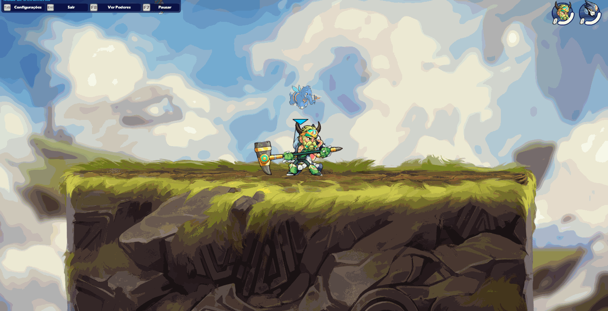
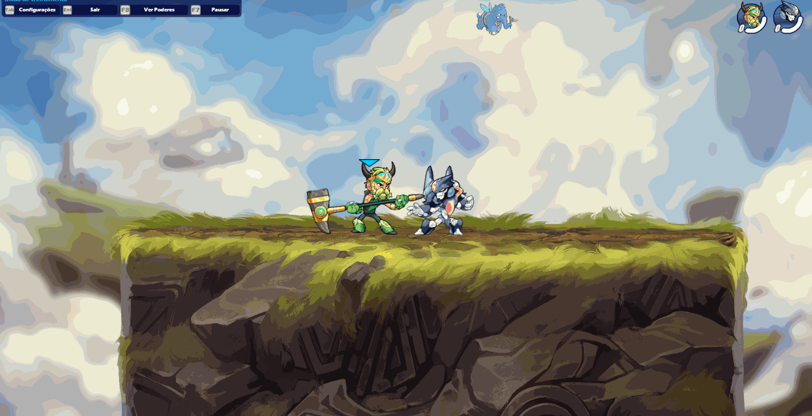
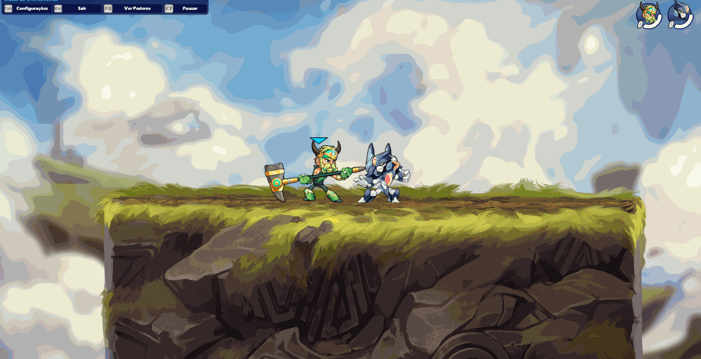
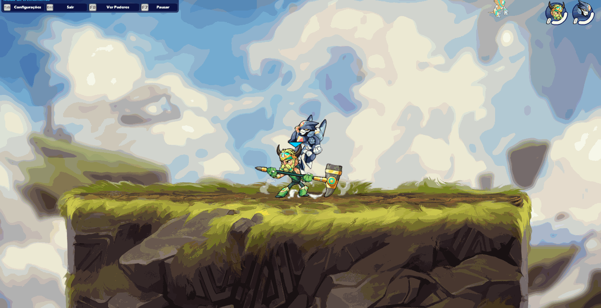
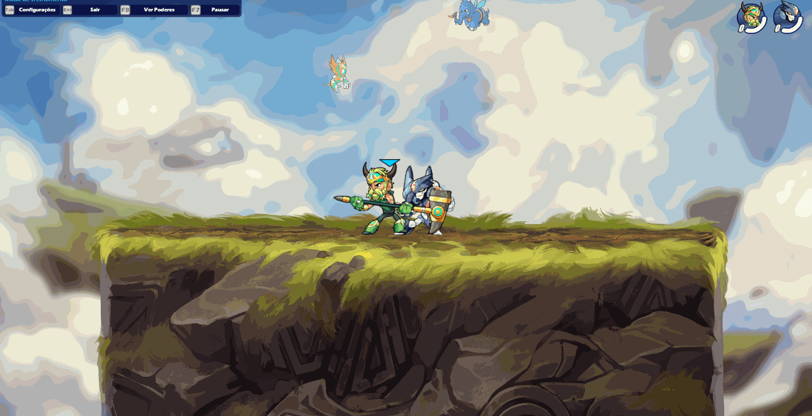
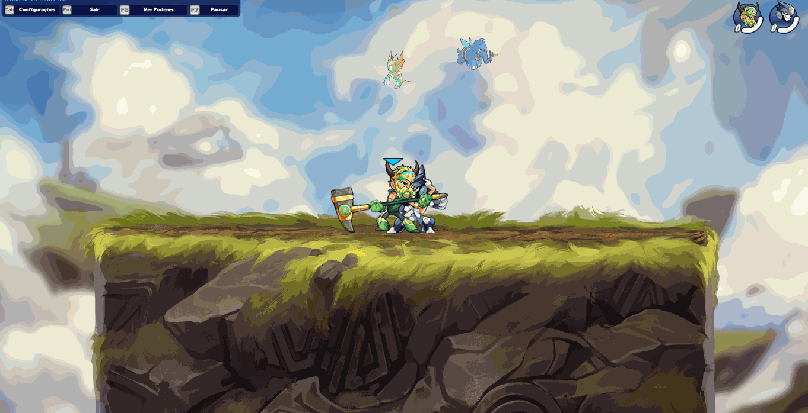
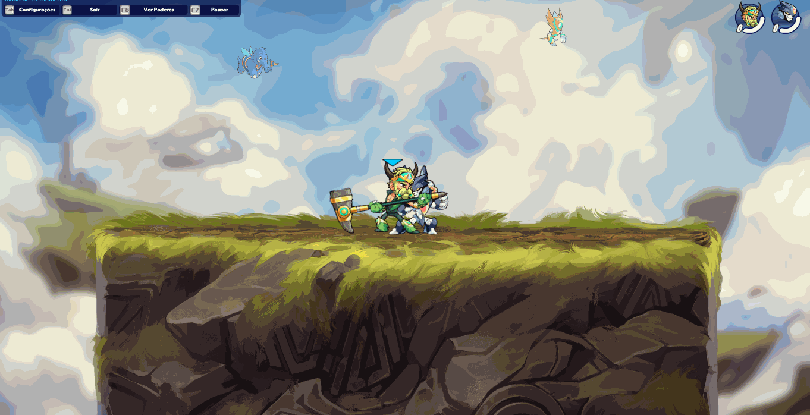

"Com o martelo nas mãos, a força se torna imponente e a coragem se faz presente para enfrentar qualquer desafio no campo de batalha do Brawlhalla."
"Com o martelo nas mãos, a força se torna imponente e a coragem se faz presente para enfrentar qualquer desafio no campo de batalha do Brawlhalla."
O martelo é uma arma pesada e poderosa, capaz
de causar grandes danos em um único golpe. Com seu alcance e
poder de impacto. O martelo também pode ser
uma arma difícil de dominar devido à sua velocidade de ataque
relativamente lenta e seu alcance limitado em certas situações.
É uma arma ideal para jogadores que preferem uma estratégia defensiva, porém
em certas situações podem tornar difícil o combate contra inimigos mais rápidos. Além disso, o martelo pode ser um alvo fácil para jogadores que preferem jogar mais agressivamente.


O usuário chuta duas vezes em um alcance limitado. Se o ataque for bem sucedido, o usuário derrubará seu martelo sobre o oponente.
O usuário golpeia o inimigo a frente de dele com a parte superior do martelo. O usuário também avançará uma curta distância para frente.
O usuário pisa no chão, criando partículas de poeira. O stomp causa dano aos oponentes e o lançando para cima. O ataque pode se conectar com a maioria das NSigs das lendas de martelo.
O ataque é direcionado para cima, atacando oponentes que estão no ar.
O usuário usa um ataque lateral no ar causando grande dano e lançando o inimigo para longe.
O usuário vira o martelo para baixo. Se ele acertar alguém, o martelo prende o oponente e o arremessa para cima.
O usuário levanta o martelo levemente dando ao usuário um pequeno impulso vertical. Se um inimigo é pego pelo martelo durante este ataque, o inimigo é arremessado para baixo e o usuário recebe um impulso extra para cima.

O usuário vira de cabeça para baixo com o martelo acertando oponentes verticalmente para baixo com muito força.
